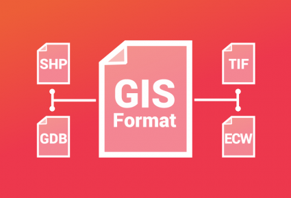

PROJECTS
Project Material
INTRODUCTIONS
The goal of this project is to identify the markets and facilities that offer
goods and services in all seven (7) counties of Luanda. Also, the second goal
of this project is to measure the accessibility and suitability of those
services based on their locations and the population demand.

DATASETS AND SOFWARE
Dataset
For this project, we used ArcGIS and QGIS, to successfully
accomplish the task. With those GIS tools, We were able to
identify the locations of all facilities and find out
its level of accessibility and suitability.

PROCCESSES
RESULTS & EXPECTATIONS
The goal of this project is to identify the markets and facilities that offer
goods and services in all seven (7) counties of Luanda. Also, the second goal
of this project is to measure the accessibility and suitability of those
services based on their locations and the population demand.